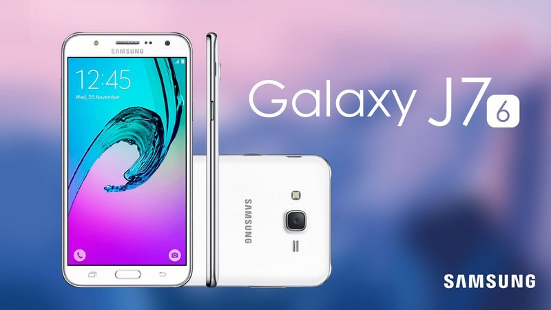

Galaxy J5 và Galaxy J7 là những mẫu smartphone đầu tiên của Samsung có đèn flash ở mặt trước để giúp người dùng selfie tốt hơn. Bộ đôi này ra mắt vào mùa hè năm 2015 và bây giờ sản phẩm kế nhiệm cũng đã lộ ảnh.
Xem thêm: Khách hàng TGDĐ mua điện thoại Galaxy J5 trúng xe Mercedes 1.5 tỷ
Theo đó, bộ đôi Galaxy J5/J7 2016 vừa đạt chứng nhận và xuất hiện ảnh tại FCC (Ủy ban chứng nhận thiết bị viễn thông Trung Quốc). Cả hai trông khá giống nhau cho dù J7 lớn hơn (5.5 inch full HD so với 5.2 inch HD của J5). Có vẻ như Samsung đã thiết kế sản phẩm mới thanh lịch hơn nhưng dường như máy vẫn làm bằng nhựa, Phonearena cho hay.
Galaxy J7 2016 sẽ có 2 biến thể với tên mã SM-J7108 và SM-J7109 với sự khác biệt duy nhất là bộ vi xử lý. Trong khi SM-J7108 dùng chip 8 nhân Exynos 7870 tốc độ 1.6 GHz thì SM-J7109 cũng là chip 8 lõi nhưng không rõ là loại chip nào, nó có xung nhịp 1.5 GHz. Xem thêm: Rò rỉ cấu hình mới của Galaxy J7: màn hình Full HD, dùng chip Exynos hiện đại Galaxy J7 2016 hỗ trợ kết nối mạng LTE, camera 13 MP mặt sau, 5 MP mặt trước với đèn flash, bộ nhớ RAM/ROM 3/16 GB và dự kiến trang bị pin lên tới 4.000 mAh. J5 cũng có camera tương tự nhưng vi xử lý lõi tứ tốc độ 1.2 GHz, có thể là Snapdragon 410, trong khi bộ nhớ RAM/ROM cũng thấp hơn, chỉ là 2/16 GB mà thôi. Điểm đặc biệt nhất là mặt sau dường như được trang bị cổng lấy nét bằng laser cho máy ảnh, nó sẽ giúp tốc độ lấy nét nhanh hơn và chất lượng hình ảnh cũng tốt hơn.
Galaxy J7 2016 sẽ có 2 biến thể với tên mã SM-J7108 và SM-J7109 với sự khác biệt duy nhất là bộ vi xử lý. Trong khi SM-J7108 dùng chip 8 nhân Exynos 7870 tốc độ 1.6 GHz thì SM-J7109 cũng là chip 8 lõi nhưng không rõ là loại chip nào, nó có xung nhịp 1.5 GHz. Xem thêm: Rò rỉ cấu hình mới của Galaxy J7: màn hình Full HD, dùng chip Exynos hiện đại Galaxy J7 2016 hỗ trợ kết nối mạng LTE, camera 13 MP mặt sau, 5 MP mặt trước với đèn flash, bộ nhớ RAM/ROM 3/16 GB và dự kiến trang bị pin lên tới 4.000 mAh. J5 cũng có camera tương tự nhưng vi xử lý lõi tứ tốc độ 1.2 GHz, có thể là Snapdragon 410, trong khi bộ nhớ RAM/ROM cũng thấp hơn, chỉ là 2/16 GB mà thôi. Điểm đặc biệt nhất là mặt sau dường như được trang bị cổng lấy nét bằng laser cho máy ảnh, nó sẽ giúp tốc độ lấy nét nhanh hơn và chất lượng hình ảnh cũng tốt hơn.